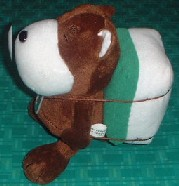
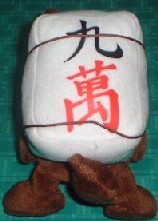

Monolog 独白 ・
（1７）詰麻雀
スポーツ新聞のコラムなどに、よく詰碁や詰将棋が「３分で初級」とか、「５分で中級」という形で掲載されている。それと並んで、麻雀も「何切る」問題が掲載されている。それはそれで大いに結構。

しかし何切るクイズでは、清一色で「何を切ったら、一番マチが多いか」という問題でもない限り、回答に１分はおろか10秒もかからない。14枚から１枚を選択するだけ。問題を読み終わってから、掛かって数秒。
おまけに、仮りに１分かけて回答しても、どういう構想で手を進めるかなんてのはプレーヤーによって異なる。詰め上がるどころか、誰の回答にも異論反論オブジェクション。
別に何切るクイズをバカにしているわけではない。それはそれで麻雀クイズの１ジャンル。しかしく詰碁や詰将棋とはジャンルが異なる。そこでムサシは考えた。
詰碁/詰将棋と同様に、「３分で初級」とか、「５分で中級」というような、そして見事に詰み上がるようなクイズはないかいな。そんな思いで考案したのが詰麻雀。
詰麻雀は、詰碁/詰将棋と同様、手順が命。ここが牌謎(パイメー)と大きく異なる。また何切るクイズのように数秒で出来ることはない。その代わり、牌謎のように１週間も10日もかかることもない。詰碁/詰将棋と同様、初級、中級問題なら３分から５分、上級問題でも数10分程度である。
内容によって、いちおう手順/清一/役満の３種類に分けた。といってもやる事はみんな一緒。それはいいが、実は各種類とも、まだ問題は自作、他作を含めて数種類づつしか出来ていない。
時間を掛ければいくらでも出来るが、なにせ作る時間がない。おまけに、まだまだ煮詰めが不十分。余詰めや最短手ミスがどんどううでそう。まぁ、それでもいいや。とりあえず、作ってみるのが大事だろ。(^-^；
